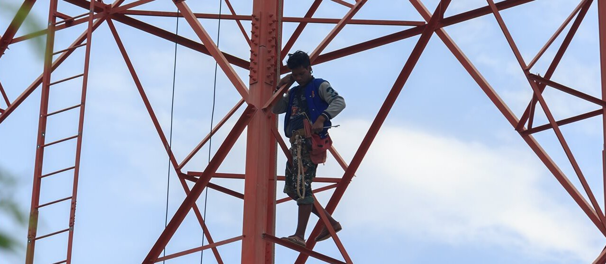
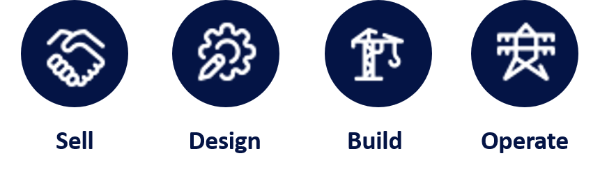
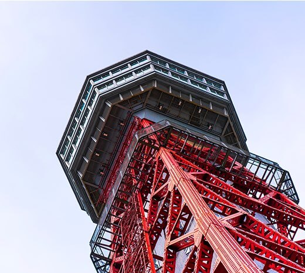

Tower infrastructure companies are under pressure to scale as quickly as possible and those who do not adopt a simple, yet powerful operating model will increasingly struggle to solve organizational bottlenecks and structural challenges. The tower industry has evolved substantially over the past decade, with operators of passive infrastructure launching new products, investing in software and operational improvement, and acquiring tower portfolios from mobile network operators (MNOs).
Founder-led tower companies are especially focused on building sales organizations that maximize tenancies and constructing infrastructure as cheaply as possible. In countries from the United States to Indonesia, the tower company (towerco) who can most quickly secure “yes” from MNOs is likely to be among the top 3 players in its market.
Seasoned tower executives know well that the key to securing and renewing those MNO contracts is scale. Once scale is achieved, however, the challenges of delivering on service-level agreements (SLAs) while maintaining growth become apparent. Many companies find it difficult—for an array of reasons including organizational silos, geography, and culture—to standardize the company-wide processes that would deliver consistent quality of service. Accordingly, revenue growth is accompanied by a host of technical and organizational challenges. These include executing site acquisition and construction, identifying opportunities for colocation, facilitating the addition of new tenants, solving diverse (and distributed) operations and maintenance problems, and integrating acquisitions of people and assets into the legacy organization.

In many of the most mature country markets, the arrival of 5G, IoT and edge computing are affecting carrier equipment and towerco infrastructure deployments as access networks converge and densify. Forthcoming infrastructure demand will be driven foremost by urban capacity needs, with macro-sites increasingly augmented by locally distributed small cell and DAS installations. Small cell and 5G deployments will require higher backhaul capacity as well as new models for infrastructure sharing (passive, active, backhaul, spectrum and others), all of which must be accounted for in the operations of a towerco.
Overcoming obstacles to efficiency and growth
One of the most basic—yet most crucial—aspects of towerco management is creating and maintaining lean workflows.
This is no easy task. Towercos must manage physical structures, inventory, and property, as well as administrative functions such as contracts, financing, and accounting. Tower companies large and small struggle to bring these diverse elements together.
Achieving a high level of contract-driven collaboration and accountability is especially crucial when managing vendors, who must be given clear guidance on SLAs and the expected quality of end-to-end services.
Without well-defined workflows, it becomes incredibly challenging to:
- Identify bottlenecks in existing procedures
- Deploy automations and measure team performance
- Reduce cycle times and communicate timelines to customers/vendors
Why a factory model for towers, small cells, DAS, and fiber?
A towerco is best served by an operating model tailored to its local context, lending structure to workflows such that their execution becomes highly standardized. This standardization provides management teams with visibility into the efficiency of constituent parts of the organization.
It also allows employees to see how their works contributes to the larger success of the company. Once this model is in place, old systems may be adjusted or retired, and new systems can be deployed to mechanize the speed of the “infrastructure factory” of a towerco.
To tailor its factory model, a towerco should develop an exhaustive framework—comprising all business activities—which maps how employee time is spent across geographies, departments, and roles. Once finished, position redundancies/gaps involved in each business activity are identified and new roles, or required role standardization, can be considered. An ideal-state structure may then be designed by drawing upon the framework’s activities and external benchmarking. The resulting organizational standardization and workflow automation collectively contribute to reduced cycle times at every tower company that has so tailored its factory model.
While the discussion here focuses primarily on the applicability of the factory model to towers, this same model is applicable to—and in even more crucial for—small cells, DAS, and fiber infrastructure.
The Sell-Design-Build-Operate Framework®
There is a definitive framework for implementing the factory model, which Stonewater Partners developed based on what has and has not worked in conjunction with various towerco business models across the globe. This framework divides tower company processes into four mutually-exclusive phases:

The Sell-Design-Build-Operate Framework improves operations by organizing towerco operations into linear and non-linear processes. Since towercos, like industrial manufacturers, employ the same processes repeatedly for tower builds, colocation, and other categories of passive infrastructure deployment, the Sell-Design-Build-Operate Framework segments businesses into discrete units which may be managed individually to reduce cycle time, increase employee efficiency, and yield higher returns on constructed assets.
Closing the deal
As soon as an operator approaches a towerco with a request, the towerco must act quickly; most operators start tracking cycle time from the first contact.
Once an order is placed. the towerco determines which of its sites meet the operator’s requirements, and if there are none, how long it may take to acquire a suitable build location. By measuring cycle time from the customer point of view, towercos can develop process flows that address common sales bottlenecks, thereby raising the probability of closing deals.
For example, accuracy of data such as space availability on towers is vital in the sell phase. Towercos often stumble when they offer space to a customer, discovering only later that the space is already occupied by another tenant—a so-called overbooking. While towercos employ an array of tower database systems including Tarantula and Siterra to help manage asset information, which system a towerco uses is less important than the speed with which site data is accessible to customers. Standardized equipment installation and site assessment processes are necessary to address data accuracy issues, which once remedied reduce the frequency of overbookings and increase the pace of the sales cycle.
Planning for buildout
The phase for build-to-suit (BTS) towers includes determining structural requirements, planning for backhaul, and completing blueprints for the final structure. Colocation requirements include identifying necessary tower extensions and foundation fortifications.
If the operator’s order requires new towers to be built, the process is more complex and time consuming than a colocation, especially when tower designs require approval from local governments and/or municipalities. Optimizing site acquisition and contracting, including streamlining the approval process, reduces the turnaround time and maximizes efficiency.
One common issue towercos face at this point is the selection of the right vendors to proceed with the next phase, the build phase. Having a robust vendor management function, with up-to-date data on vendor performance and capacity, helps project managers select the right partner for the job. Another issue is the review and approval of large projects, whose financial performance may materially affect the company’s performance in future years. Reviews of planned infrastructure builds, especially of large DAS and small cell systems, should be employed at the conclusion of the design phase, prior to final contract execution and commencement of construction. Such reviews ensure that all projects meet predefined ROI thresholds, hurdle rates, or commercial strategies that are consistent with investor expectations.
Constructing the infrastructure
With the underlying ground access secured and design confirmed, an in-house construction team or contractors build the tower (in the case of BTS) or engineers prepare for the addition of new tenants (in the case of colocation).
Throughout the build phase, project managers track budgets and supervise the work underway. Once the build or equipment installation is complete, the tower is inspected for defects and other structural concerns. After having passed such an inspection, the tower is handed off to operations and maintenance teams, diamond documents (critical documentation) are filed away, payments are initiated, and clients are notified that the site is ready for installation (RFI) so they may install their equipment.
During the build phase, missing an agreed-upon RFI deadline constitutes the greatest risk to a customer relationship. Project managers regularly confront obstacles such as blocked access to sites by uncooperative communities or delays in material delivery. Employing a consistent project management system with clear decision rights and escalation protocols helps project managers quickly determine how to respond and which stakeholders to notify when remedial actions are necessary. Well-designed process flows help ensure that — despite the rush to hit RFI — critical documentation is stored in the right places, payments are initiated on time, and the towers handed off to operations meet all the requisite safety standards.
Managing a portfolio
Infrastructure that is fully constructed and under management by a towerco’s operations function lies in the operate phase. When infrastructure sits in the operate phase, a range of preventative/reactive maintenance and inspections are performed.
Unscheduled site visits for maintenance or audit purposes can become unduly costly, especially for towercos with portfolios spanning vast geographic regions. To reduce the frequency of such visits, towercos must maximize the quantity and quality of work performed during scheduled site visits. Detailed checklists and vendor incentives can help here, as do clear processes for remedying structural and property issues including negotiations with landlords.

Nearly every towerco operates a network operations center or help desk to respond to messages from vendors, community members, electricity providers, or emergency personnel. Coordinating among these multiple parties effectively is critical to reduce the risk of downtime and ensure compliance with SLAs. Power outages, vandalism, fires, and earthquakes can, quite literally, keep operations teams up at night. Clearly defined process flows give operations managers confidence that when difficulties arise, so long as they follow prescribed protocols, they will usually be able to effectively address adverse outcomes. Towerco executives also sleep better at night in the knowledge that all but the most complex or unpredictable events can be addressed by their direct reports.
How the Sell-Design-Build-Operate Framework® creates value for stakeholders
Towercos who implement the factory model for selling, designing, building, and operating infrastructure are rewarded for doing so.